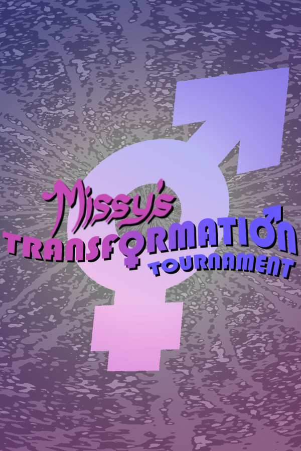

Missy's Transformation Tournament
Missy's Transformation Tournament
Details
|  | |
| Playtime | Not Played |
| Last Activity | Never |
| Added | 13/08/2020 |
| Modified | Never |
| Completion Status | Not Played |
| Source | Steam |
| Platform | PC |
| Release Date | 28/05/2020 |
| Community Score | 62 |
| Critic Score | |
| User Score | |
| Genre |
Action Adventure Free to Play RPG Simulation Strategy |
| Developer |
Jake Hugh Reece Wilson |
| Publisher |
Trywelyn Productions |
| Feature |
Achievements Cloud saves Leaderboards Single Player Stats |
| Links |
PCGamingWiki Community Hub Discussions Guides Achievements Store Page News |
Description
Welcome, human. The lady of the house requests your presence
and body to participate in...

A mind-shattering battle royale RPG where you transform yourself and your opponents to win!
ROGUE-LITE BATTLE ROYALE
Create a human character, customise them extensively and compete in one of Missy's frequent transformation tournaments. Each game is unique, with items, traps and events different each time you play. No two tournaments are ever quite the same! Battle across five arenas, each with unique items, perils and landscapes!
TRANSFORM TO VICTORY
Kiss your humanity goodbye, because you won't stay human for long! There are thousands of possible combinations of body parts and dozens of different humanoid species to play as. No-one enters the Missy's arena and leaves without changing. Each big transformation comes with unique abilities and powers. Transform your foes into submission before they can do the same to you, whilst giving yourself all the claws, hooves and scales you need to survive!
100 ENTER, ONLY 1 CAN REMAIN
The arena starts with 100 contestants and the tournament ends when only 1 remains with both their humanity and body intact. It's not only other contestants you must fear; traps, zones and the remains of former contestants all pose a serious threat.
MISSY AND HER CHAMPIONS ARE WATCHING YOU
Missy is all-powerful, all-seeing, all-terrifying. She bends reality to her will and you are but a toy in her colourful toy paws. Keep moving, keep playing, do not bore her. If you do, she is likely to spice things up at everyone's expense, creating zones of effect, new traps and punishments for all involved. You cannot defeat her... only survive her transmogrifying games. Plus, can you survive her four champions, each bringing with them a new gimmick for the tournament? Stay on your toes/hooves/talons!
HUMANOID, TAURIC OR FERAL?
Your mind will change with your body, so unless you want to lose, it must be preserved at all costs. As your humanity runs low, you will be in danger of losing control of yourself and forgetting who you are. Not only that, but you can transform into half-and-half tauric forms and full-animal feral forms if you allow yourself to be at other's mercy. Balance the physical and the mental and ride the drift of changes to win!
BIOLOGICAL, MYTHOLOGICAL AND MYTHICAL
The shapes that Missy bestows are as numerous as they are inhuman. Gain mutations to your arms, legs, torso, head, eyes, nose, ears, tail, wings and quite a few more! Certain combinations of parts provide unique powers, so try to witness them all!
FATES OF THE LOST
Those who are transformed out of the game are not dead. They are given new lives by Missy herself. Each one has a story to share. Maybe even you. Your changes and the changes of others are recorded for viewing after the tournament's conclusion. What will happen to you, after you've been consumed by the tournament?
Open your mind, open your body.
Only then can you win MISSY'S TRANSFORMATION TOURNAMENT.
NOTICE
Missy's Transformation Tournament is an evolving game, with the current version being The Second Tournament, set in the year 5311. A follow-up is in the works and is to be announced soon, continuing the evolution of this world and story. Stay tuned!
A mind-shattering battle royale RPG where you transform yourself and your opponents to win!
ROGUE-LITE BATTLE ROYALE
Create a human character, customise them extensively and compete in one of Missy's frequent transformation tournaments. Each game is unique, with items, traps and events different each time you play. No two tournaments are ever quite the same! Battle across five arenas, each with unique items, perils and landscapes!
TRANSFORM TO VICTORY
Kiss your humanity goodbye, because you won't stay human for long! There are thousands of possible combinations of body parts and dozens of different humanoid species to play as. No-one enters the Missy's arena and leaves without changing. Each big transformation comes with unique abilities and powers. Transform your foes into submission before they can do the same to you, whilst giving yourself all the claws, hooves and scales you need to survive!
100 ENTER, ONLY 1 CAN REMAIN
The arena starts with 100 contestants and the tournament ends when only 1 remains with both their humanity and body intact. It's not only other contestants you must fear; traps, zones and the remains of former contestants all pose a serious threat.
MISSY AND HER CHAMPIONS ARE WATCHING YOU
Missy is all-powerful, all-seeing, all-terrifying. She bends reality to her will and you are but a toy in her colourful toy paws. Keep moving, keep playing, do not bore her. If you do, she is likely to spice things up at everyone's expense, creating zones of effect, new traps and punishments for all involved. You cannot defeat her... only survive her transmogrifying games. Plus, can you survive her four champions, each bringing with them a new gimmick for the tournament? Stay on your toes/hooves/talons!
HUMANOID, TAURIC OR FERAL?
Your mind will change with your body, so unless you want to lose, it must be preserved at all costs. As your humanity runs low, you will be in danger of losing control of yourself and forgetting who you are. Not only that, but you can transform into half-and-half tauric forms and full-animal feral forms if you allow yourself to be at other's mercy. Balance the physical and the mental and ride the drift of changes to win!
BIOLOGICAL, MYTHOLOGICAL AND MYTHICAL
The shapes that Missy bestows are as numerous as they are inhuman. Gain mutations to your arms, legs, torso, head, eyes, nose, ears, tail, wings and quite a few more! Certain combinations of parts provide unique powers, so try to witness them all!
FATES OF THE LOST
Those who are transformed out of the game are not dead. They are given new lives by Missy herself. Each one has a story to share. Maybe even you. Your changes and the changes of others are recorded for viewing after the tournament's conclusion. What will happen to you, after you've been consumed by the tournament?
Open your mind, open your body.
Only then can you win MISSY'S TRANSFORMATION TOURNAMENT.
NOTICE
Missy's Transformation Tournament is an evolving game, with the current version being The Second Tournament, set in the year 5311. A follow-up is in the works and is to be announced soon, continuing the evolution of this world and story. Stay tuned!